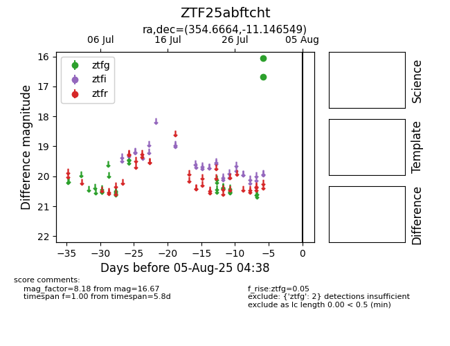

Target ZTF25abftcht at 2025-08-05 04:38, see:
FINK: fink-portal.org/ZTF25abftcht
Lasair: lasair-ztf.lsst.ac.uk/objects/ZTF25abftcht
ALeRCE: alerce.online/object/ZTF25abftcht
alt names
ZTF25abftcht (ztf,fink)
coordinates:
equatorial (ra, dec) = (354.6664,-11.14655)
galactic (l, b) = (72.4815,-66.59185)
photometry
last ztfg=16.67
2 ztfg detections
